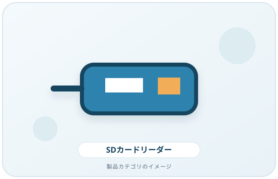
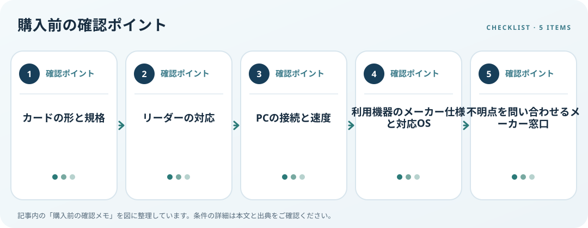

SDカードリーダーは、カードが挿さるかだけでなく、カードとリーダーのバス規格が合うかを確認します。SD Associationによれば、カードとホスト機器の組み合わせによって利用できるインターフェース速度が変わります。速度表示を活かしたい場合は、カード、リーダー、PC側の接続仕様を一緒に照合してください。
画像・ボタンはAmazonアソシエイトリンクです。適格購入により紹介料を得る場合があります。

Amazon.co.jpで「SDカードリーダー UHS」を探す ↗

対応条件を仕様で確認
カードが標準SDかmicroSDか、SDHC・SDXC・SDUC等の容量規格とUHS・SD Express等のバス規格を確認します。カードリーダーの対応一覧に必要な規格が明記されているかを見ます。スロットに挿せる物理形状と、データを読み書きできる規格への対応は別の確認事項です。
利用環境・設置条件を確認
高速カードでもリーダーやPCの接続規格が対応しなければ、カードの表示上限を利用できるとは限りません。SDとmicroSDの同時読み込み、スロット数、ケーブル長、OS対応も確認します。購入前にカードの型番・規格、リーダーの対応、PCのUSB仕様を並べ、必要な用途に合うことを確認します。
購入前の確認メモ
- カードの形と規格
- リーダーの対応
- PCの接続と速度
- 利用機器のメーカー仕様と対応OS
- 不明点を問い合わせるメーカー窓口
記事は出典の公開情報を確認手順に整理したもので、製品の使用・実測・ランキング・価格・在庫の調査は行っていません。購入時には各メーカーの最新情報をご確認ください。
出典
- Bus Interface Speed Standards for Large Size Data Transfer — SD Association（確認日: 2026-10-10）
- FAQ — SD Association（確認日: 2026-10-10）